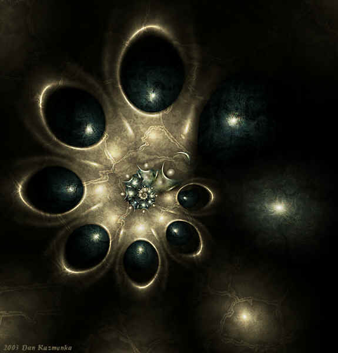

7 Плавание Харона
Церковь. Отпевание Клавдии.
У меня слезы на глазах, я их прячу. Она ведь в последний день сказала, что меня любила!
Мы с Эдиком стоим в стороне и держим в руках свечки, как и все остальные
- Я думала, меня в церковь не пустят, - сказала я отчасти в шутку, - я ведь стала вампиром. Молния ударит или икона грохнеться на меня
- На деле всё как раз наоборот, - ухмыльнулся Эдик, - это - их излюбленное место
С этими словами Эдик взглянул в лицо Иисуса и незаметно для окружающих погрозил ему кулаком
- У, вурдалак проклятый!
- Ты в своём уме? - спрашиваю, - он-то тут причём?
- Как причем? Его именем столько безобразия творилось! Одни крестовые походы чего стоят. А закабаление народов...
- Так он-то небось не хотел этого. И вообще может, и не было его.
- Был. У меня есть хороший знакомый, который его ещё мальчишкой помнит...
- Это не он случаем у Канта за завтраком был и у Пилата на балконе стоял?
- Не совсем... А насчёт Иисуса... в общем, погубили они его. Жил себе парень, пас овец. А тут эти горе-прогрессоры обратили его, устроили момент включения и начали через парня вещать свои "великие истины", народ смущать. А потом подставили его, он и помер. Они это, они, красавцы эти... даже в ветхом завете спалились они: всё время "мы" говорят и речь всё та же витиеватая - тарабарщина. Ты, небось, заметила уже. Если нет, то ещё заметишь.
- Даже если и так... как думаешь, сознание его живо?
- А как иначе? Он же вурдалак. Тоже мается, небось. И ты будешь маяться.
"Совсем у Эдика крыша поехала", - думаю, - "везде ему вурдалаки мерещатся"
К нам подходит Роберт и что-то шепчет Эдику. Я отхожу в сторону и гляжу в лицо Иисусу:
- Слушай, уж не знаю, есть ли там кто на том конце, - говорю ему мысленно, - Приём, как слышно? Агностик я, понимаешь? Пока не докажу, ты хоть тресни - не поверю. Разумом готова принять даже всякую белиберду вроде вурдалаков. Знаешь, если сейчас меня слышит кто-нибудь добрый и мудрый - ты или тот, кто прячется за твоей маской - пусть меня не осуждает. Я дошла до края и становлюсь вурдалаком. Ну и что, что вечный ад? Зато - постоянное центральное отопление. А рай... Это хорошо, конечно. Но сам посуди - кому я там нужна? Там же уже всё хорошо! Всё сделано. А мы нужны там, где чего-то не хватает. Где нужна наша помощь!
"Сделать рай из ада - это воистину адова работа" - пришли вновь мои чужие мысли.
- В рай можно иногда заглядывать, чтобы посмотреть, как у них всё устроено и сделать не хуже. И не верю я в эти байки, что все тяготы даются как испытания воли. Не все! Почему напрасно гибнут дети, почему котята замерзают в январской ночи? Я уверена, в мире есть какая-то недоработка. Что-то сломалось, разладился какой-то механизм. Надо починить. Или изначально было разработано тяп-ляп. Я сама программист - знаю, как потом приходится расхлёбывать, изобретать костыли, если сразу заложишь неверную логику. Пора что-то делать. Нет, не думай, я тебя просить ни о чем не собираюсь - у меня всё есть. Я представляю, как же тебя достало, что все к тебе приходят и чего-то просят. И никто не спросит - а чем тебе помочь? Что у тебя самого на душе? Словно ты всем задолжал по гроб жизни... Скажи, как думаешь, кто они - вурдалаки эти? А вдруг да правда... Вот стану я одной из них - буду пить кровь всяких гадов и вредителей. И пусть говорят про карму - плевать я хотела! Не хочу я в ваш рай! Хочу туда, где я нужна, где по-честному! По-настоящему, без этой лицемерной слащавой благочестивой патоки. Хорошего во мне мало, ты и сам видишь. Так что как от вурдалаки пользы от меня будет в разы больше. Каждому свое. Давай, будь здоров!
Возможно, возникла иллюзия зрения от нагретого воздуха над свечкой, но мне показалось, что изображение мне улыбнулось.
- Кстати, насчёт бессмертия, - сказал Эдик, который вновь подошел ко мне, - Твои новые братья тебе не рассказывали, что у инициации всегда только один конец - смерть?
- Что? - удивилась я, - это какая-то аллегория
- Нет. Всё по правде. Кстати, твоя смерть уже скоро, - сказал он, прищурившись
Я лихорадочно рассмеялась.
- Ну а ты как хотела? Сначала они проводят тебя через всё, что только могут, затем убивают. Умирает человек в тебе и рождается вампир. Не бойся, - Эдик рассмеялся, - на самом деле, это у них стандартная процедура. Считай, перезагрузка. Они внесли изменения, после чего им нужно их применить и перезапустить, как и в компьютере. В определенный момент тебе резко поплохеет. Скорее всего, это случится ночью.
- Они сказали, что там всё серьёзно - останавливается сердце…
- Ну да. Не беспокойся, никаких мук гибели души там не будет. Думаю, просто потеряешь сознание. Хотя... фиг знает... я это не проходил. А вообще, советую тебе - пока ещё можно, делай ноги, беги от них. Пока смерть не наступила, всё можно откатить. Если хочешь, я тебе помогу. Попрошу моего хорошего знакомого... ты же знаешь - у меня связи.
Крематорий... Витражи...
Вечером возвращаемся с Эдиком. Эдик идёт медленно, хромает, опираясь на палочку.
- А почему твой могущественный приятель, который Иисуса знал мальчишкой, не вылечит тебя от инвалидности?
- Не его профиль. Хотя я знаю тех, кто может это сделать. Но у всего есть своя цена. Эту цену я заплатить не готов.
- А ты-то сам кто такой? Говоришь, не вурдалак.
- Я - последний из магикан. Нас почти не осталось - вымирающий вид. Меня можно заносить в красную книгу. Я из драконов.
Некоторое время мы молчали.
- Знаешь, - Эдик вдруг замялся, - у меня никак из головы не выходит тот случай, когда ты кинулась на меня, чтобы укусить.
Я смутилась.
- Да я сама не ожидала, что со мной может произойти подобное. Хорошо хоть клыки не выросли.
- Да я не об этом... - продолжил Эдик, на лице его появилось странное выражение, словно он желал поведать мне какую-то тайну.
- А о чём?
- Знаешь... а мне в некотором смысле даже понравилось. Я до этого тебя иначе воспринимал - ну ходит кучерявая девчонка делать уколы и ладно... А в тот день ты совсем иная была. Я среди ночи ворочался и понял - тянет меня к тебе, вампирша.
Я промолчала: даже не знаю, что говорят в таких случаях.
- Да ты не заморачивайся, - продолжил Эдик, - Понимаю, что с твоей стороны ко мне ничего нет. Кому нужен калека, который еле ходит и ничего особенного в своей жизни не добился?
- Да брось! Причем здесь это? А насчет не добился - ты прекрасный специалист своего дела.
Я говорила всякую ерунду, чтобы только оттянуть время. Я понимала - если бы возникла та самая искра, я бы не посмотрела ни на что, пошла бы за ним хоть на край света. Но в моей душе поселился иной неведомый огонь...
- Тем не менее, знай, что двери моего дома для тебя открыты, - продолжил Эдик
Я поблагодарила странного сисадмина.
- Скоро я уеду в город: в августе похолодало, - Эдик перевел разговор на другую тему.
- Мы тоже скоро уезжаем.
Некоторое время мы молча шли по дорожке.
- Знаю, это звучит глупо.. - Эдик возобновил разговор, - но во сне из лесу ко мне пришло домой дерево и попросило: "У меня нет рук. Помоги мне, сделай для неё вот это колечко". И словно вынуло его из себя со словами: "Я бы даже сам из себя выстругал, но не могу". Меня это проняло: дерево словно желало пожертвовать частью себя.
- Ничего себе! - воскликнула я, вспоминая рассказ Роберта о лешем.
- Оно показало мне узор, - продолжил Эдик, доставая из кармана самодельное колечко, - я увидел его и сразу запомнил. По утру сходил в сарай, где лежали дрова, и выстругал кольцо.
Увидев его творение, я вздрогнула:
- Я же видела этот узор во сне два дня назад!
- Что ж, видать, опять вурдалаки развлекаются... - грустно усмехнулся Эдик, протягивая мне колечко.
Я получила очередное доказательство существования некого феномена, который не могла объяснить.
Я взяла кольцо и покрутила в руках. Неужто мой размер? Мне захотелось его примерить.
Когда я надела кольцо, почувствовала, что меня словно молния ударила. Начало происходить что-то из ряда вон выходящее, тело сотрясалось, возникали нервные импульсы огромной силы. Ноги подкосились, я чуть не упала.
